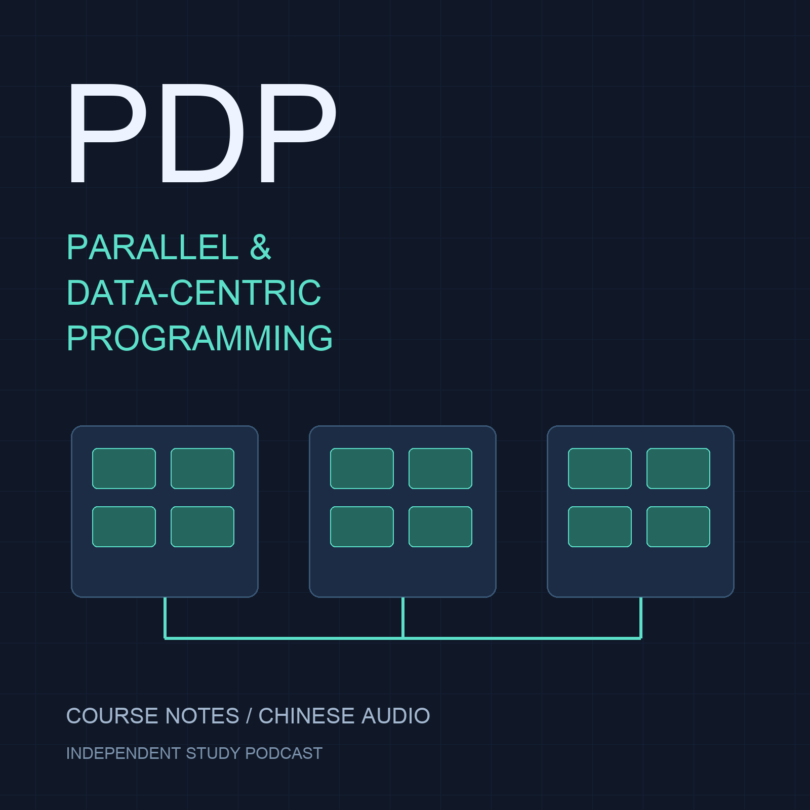

EP04 — 什么时候等待，什么时候继续做别的事？
时长：00:31:40
technical-preview：技术检查通过；人类听感尚未测试。

基于 RWTH Aachen Summer 2026 Concepts and Models of Parallel and Data-centric Programming 课程资料编写的中文双人学习播客。独立学习资料，非学校或教师官方节目；AI 合成语音，中文主讲并解释英文术语。
在播客应用中添加完整 RSS 地址：
https://runzhouli.github.io/hermes-agent-podcast/general/pdp-course/feed.xml
时长：00:31:40
technical-preview：技术检查通过；人类听感尚未测试。
时长：00:33:00
technical-preview：技术检查通过；人类听感尚未测试。
时长：00:30:40
technical-preview：技术检查通过；人类听感尚未测试。
时长：00:30:31
technical-preview：技术检查通过；人类听感尚未测试。